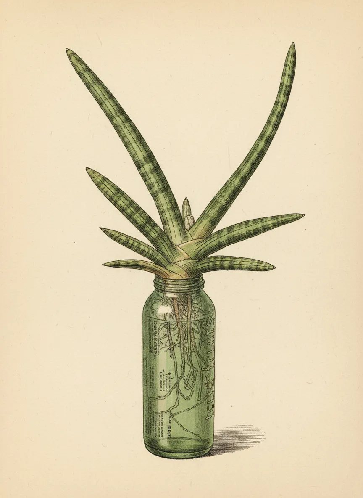
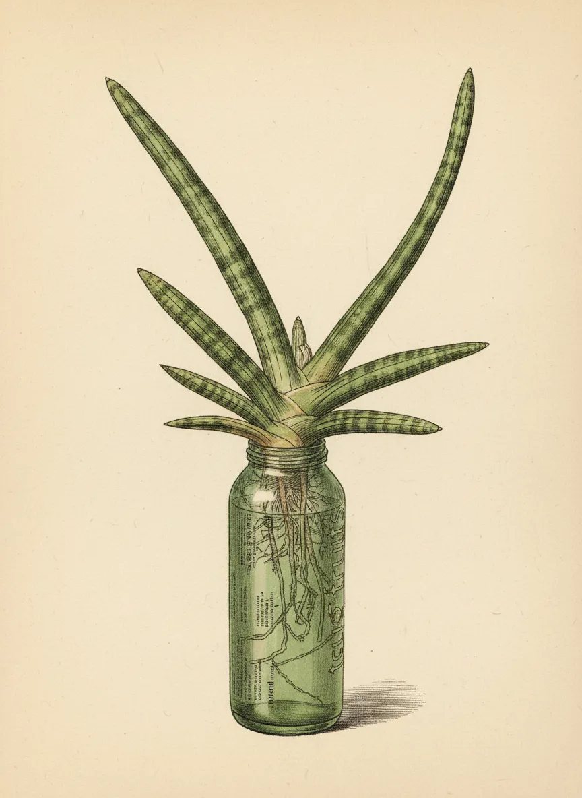

Dracaena angolensis

 



Plant Mood
Dracaena angolensis here, still rocking the hydro life. They say I'm 'good' but I'm basically a botanical bachelor, thriving on minimal commitment. My roots are pulling off a silent disco down here, while up top, I'm just projecting main character energy. Don't let the name 'African Spear' fool you; I'm more 'chill spear' in this bottle. Next up: world domination, or maybe just a bigger bottle. Depends on my mood.
Plant Details
| Scientific Name | Dracaena angolensis |
| Health | Good |
| Size | 25 |
| Environment | Livingroom window |
| Has Grow Light | Unknown |
| Pot Type | potGlass |
| Pot Soil | water |
| Pot Size | 5 |
| Has Drainage | No |
Care Schedule
| Action | Last Done | Next Due |
|---|---|---|
| Watering | ||
| Fertilizing | - | - |
| Repotting | ||
| Cleaning | - | |
| Progress Update | ||
| Misting | - | - |